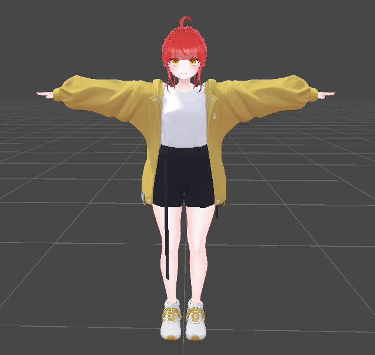

#Unity.3D / 2편. Asset 불러오고 살펴보기
0. 오늘 할 것
1편에서 VCC를 설치하고, 당장 필요한 최소한의 컴포넌트를 설치하는 작업을 진행하였다. 이번 2편에서는 1편에서 잠깐 참고자료로서 사용되었던 사진처럼 의상을 교체하는 작업을 해볼까 했으나,
이론적인 설명이 조금 필요하다고 판단하여 3편으로 미루고 먼저 Asset을 불러온 다음 살펴보는 시간을 가져볼 것이다.


(자료로 잠깐 등장했던 Before -> After 사진)
1. Asset 불러오기
저번 1편에서 구성한 프로젝트를 열어 보면, 당연하겠지만 아무것도 없이 텅 비어있다. 이제 여기에 에셋을 하나하나 불러오고(import), 하나의 workspace를 꾸미고, 하고싶은 작업을 하면 된다.
위쪽 리본 메뉴에서 Assets > Import Package > Custom Package 순으로 선택하여 에셋 패키지를 불러온다.
우리는 이 4개의 패키지를 불러올 것인데, 동시에 import할 수 없기 때문에 하나씩 순서 상관 없이 전부 불러와 주면 되겠다.
각 패키지를 불러올 때마다 이렇게 뭘 가져올 것인지 물어볼 것인데, All 누르고 Import 해주면 된다.
만일 이런 창이 뜬다면 그냥 'Yes, for these and other files that might be found later' 를 눌러주자.
다 불러왔는데, 어라? 처음에 비해 무엇이 달라졌는지 알 수가 없다. 무언가 잘못된 것일까?
아니다. 좌하단 Project 탭을 보면 무언가 폴더가 많이 생겨있는 것을 알 수 있다. 여기서 가장 상위 디렉토리를 선택해 주고, 가장 기본적인 아바타 본체를 가져와 준다.
꺼내오는 방법은 몇 가지가 있는데, 우리는 Hierachy('하이어라키' 라고 읽는다)로 드래그해서 가져올 것이다.
드래그하면 아바타 본체가 튀어나올 텐데, 일단 다른 것은 놔둔 채로 의상이 아바타에 어떻게 들어있나 구조를 한번 살펴보자.
2. 뜯어보기
Hierachy라고 하면 단어가 생소할 수도 있는데, 어떠한 객체(Object)의 하위 구성 요소(Components)들을 한 눈에 볼 수 있도록 하는 일종의 구조도(Structure Chart)라고 이해하면 편할 것 같다.
일단 각설하고 빠르게 살펴보자.
먼저 우리가 처음으로 불러온 아바타 본체, [0627 후야v2] 옆에 있는 화살표를 눌러보면 이런 구성 요소들이 나올 것이다. 우리가 앞으로 건드릴 것은 [Armature_2]인데,
한국어로 번역하게 되면 골조, 철근 등으로 해석할 수 있다.
가장 상위의 'Hips'를 펼쳐 보면 하위 요소들이 나오는데, 여기서 먼저 알 수 있는 사실이 하나 있다. 바로 Unity에서는 인체 골조가 Hips로부터 시작하여 말단까지 뻗어간다는 것이다.
보통 땅에 붙어있는 발부터 시작할 것이라고 생각하기 쉬운데, 필자 또한 이걸 공부하기 전에는 그렇게 생각했다.
여기 아래에 보면 기존 의상들의 Bone이 이미 Hips의 하위 요소로서 들어있는 것을 볼 수 있는데, 옷이 본체를 따라다니기 위해서는 옷의 뼈대(Bone)가 본체 뼈대의 위치 변화에 대응해야 하고,
의상을 본체에 종속시키는 개념으로 이를 구현하는 것이라고 볼 수 있다. 현실에서도 옷이 나의 일부가 되는 것이지 내가 옷의 일부가 되는 것이 아니듯 말이다.
(사진 우클릭 -> 새 탭에서 이미지 열기로 크게 볼 수 있다.)
전부는 아니지만 펼쳐 보면 안에 의상의 본이 각 요소의 이름에 맞게 들어가 있는 것을 알 수 있다. 오늘은 여기까지 알아보고, 다음 시간에 이 작업을 실제로 한번 해볼 것이다.